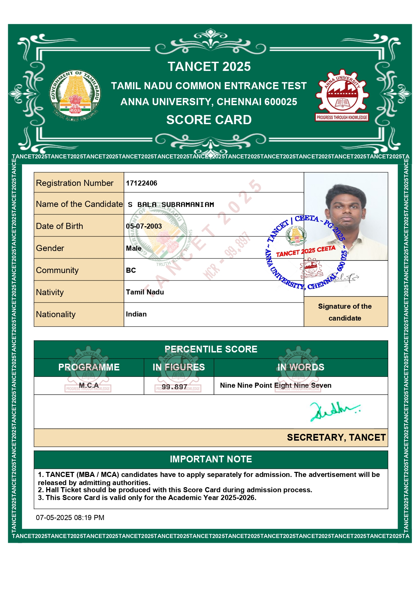
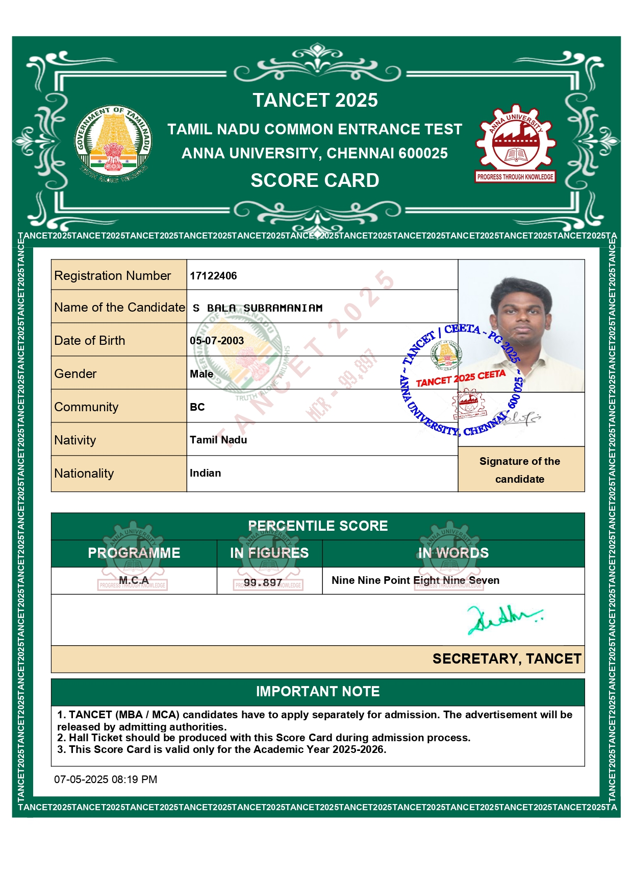

Scored 99.897 Percentile in TANCET MCA 2025
Secured a top percentile in the TANCET MCA exam, among the top performers in Tamil Nadu.
Hi, I’m Bala Subramaniam, an MCA student at PSG Tech, passionate about coding, full-stack development, and problem solving.
Welcome to my personal blog! Here, I share my thoughts, experiences, and insights on various topics that interest me. From technology trends to personal development, I aim to provide valuable content that resonates with my readers. Join me on this journey as I explore new ideas and share my perspective on the world around us.
I am Bala Subramaniam, a dedicated MCA student at PSG Tech with a passion for coding and full-stack development. My journey in the world of technology has been driven by a relentless curiosity and a desire to solve complex problems through innovative solutions. I thrive on challenges and continuously seek opportunities to expand my knowledge and skills in the ever-evolving tech landscape.
College: PSG College of Technology
Course: MCA (Master of Computer Applications)
Batch: 2025 – 2027
City: Coimbatore, Tamil Nadu
Previous Degree: B.Sc. Physics
Special Interest: Software Development, Full Stack Development
Secured a top percentile in the TANCET MCA exam, among the top performers in Tamil Nadu.
Started MCA at PSG Tech, one of the premier institutions in Tamil Nadu.
Completed B.Sc. Physics with distinction, bridging to Computer Applications for a career in Software Development.